Connect your car
ParkSG starts your parking timer when your iPhone disconnects from your car's Bluetooth, and ends it when it connects again. You set this up once in Apple's Shortcuts app with two automations. It takes about two minutes.
- Your iPhone is already paired with your car's Bluetooth (the car shows up in Settings › Bluetooth).
- ParkSG is installed and you have opened it once.
- The Shortcuts app is on your iPhone. If you removed it, get it again from the App Store.
Screens are from iOS 27. On older versions the wording differs slightly; see the notes at the end.
Automation 1: when you park
Open Shortcuts and tap Automation
If Shortcuts opens on another screen, tap back until you see Library.
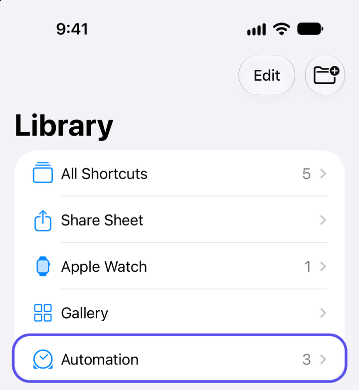
Tap + at the bottom
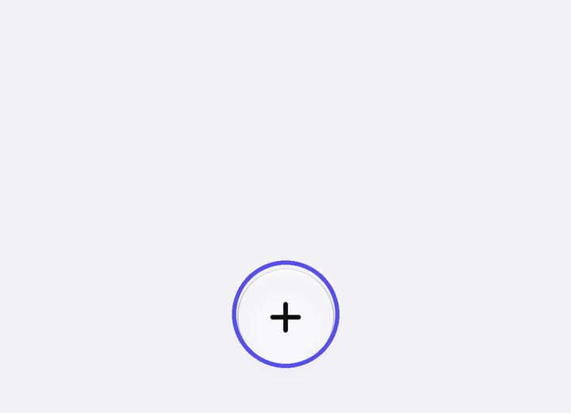
If you see "Describe a Shortcut", tap Edit
This skips the describe screen and opens the editor. If you land in the editor straight away, carry on.
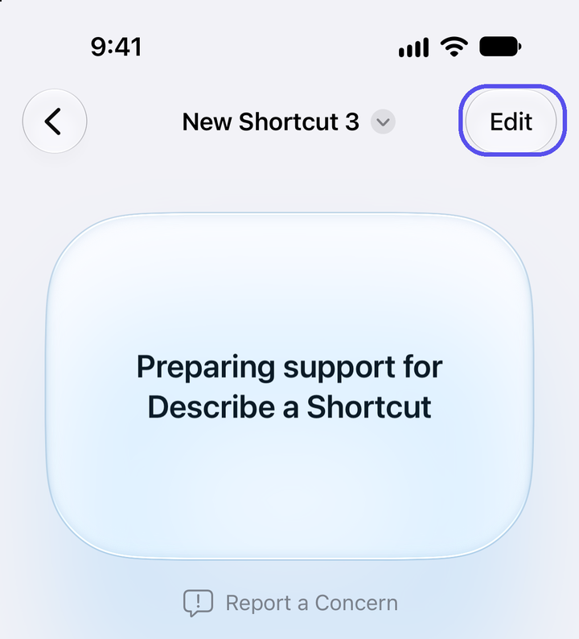
Tap the Automation chip, then Bluetooth
The chips sit under the Search field at the bottom. Bluetooth is under Connectivity.
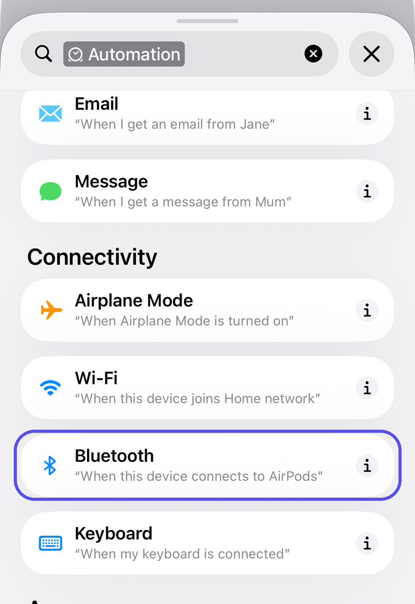
Tap Any Device and pick your car
You get a card that reads "When Any Device is Connected". Tap Any Device, choose your car from the list, then tap the blue tick.
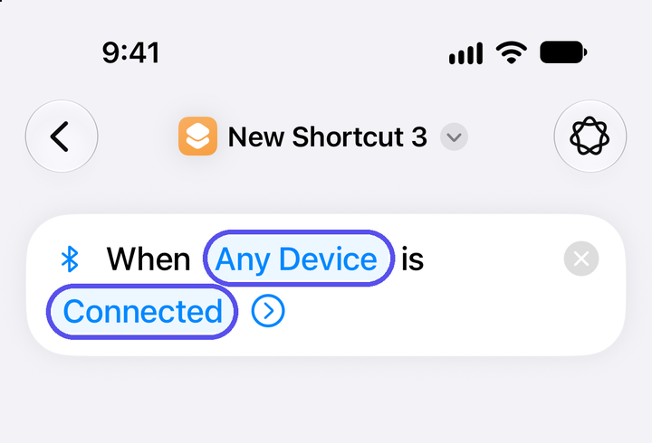
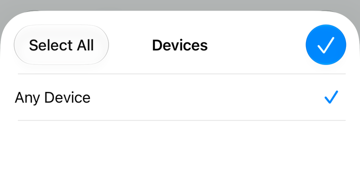
Your car's name appears in this list on your iPhone. Pick it, so headphones and speakers don't start a parking session.
Tap Connected and change it to Disconnected
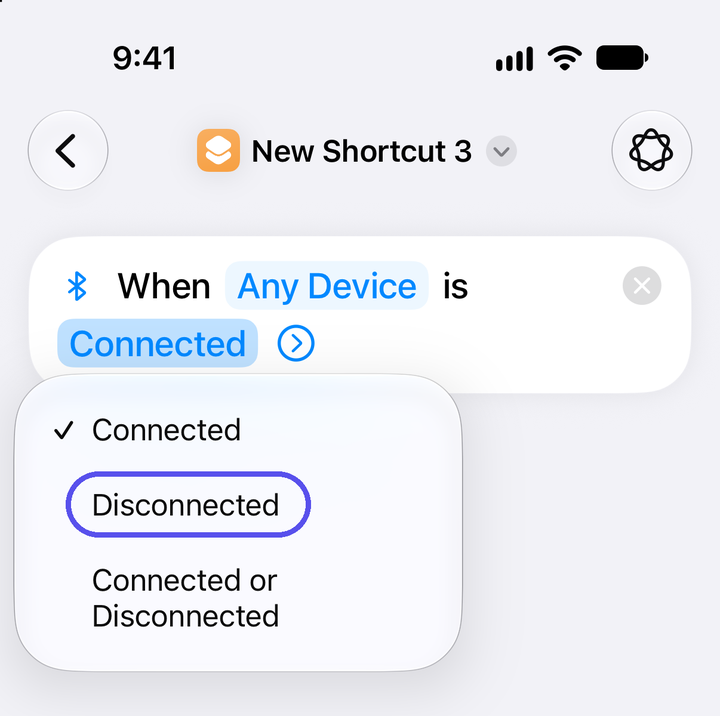
Leave Confirm Before Run off
Tap the small arrow next to Disconnected to check. Automation should be on and Confirm Before Run off, so it runs by itself.
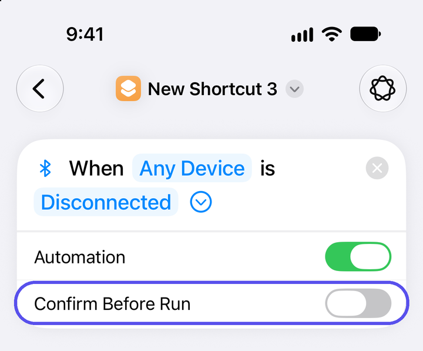
Search for ParkSG and choose "Car disconnected (I parked)"
Tap the Search field at the bottom and type ParkSG.
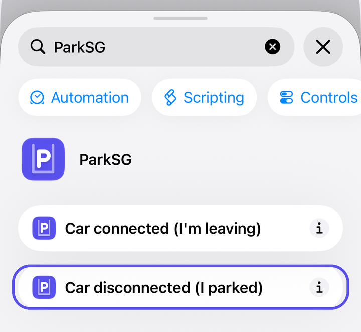
Tap back to save
The automation should look like this. There is no Save button; tapping the back arrow keeps it.
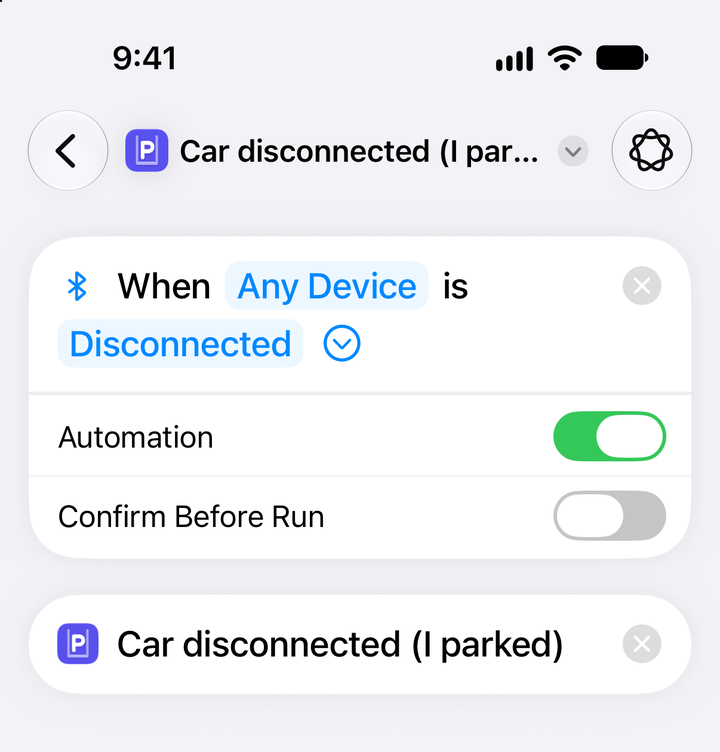
Automation 2: when you leave
Tap + again and repeat steps 3 to 5
Edit, Automation chip, Bluetooth, then pick your car.
Leave it on Connected
This time don't change the state.
Search for ParkSG and choose "Car connected (I'm leaving)"
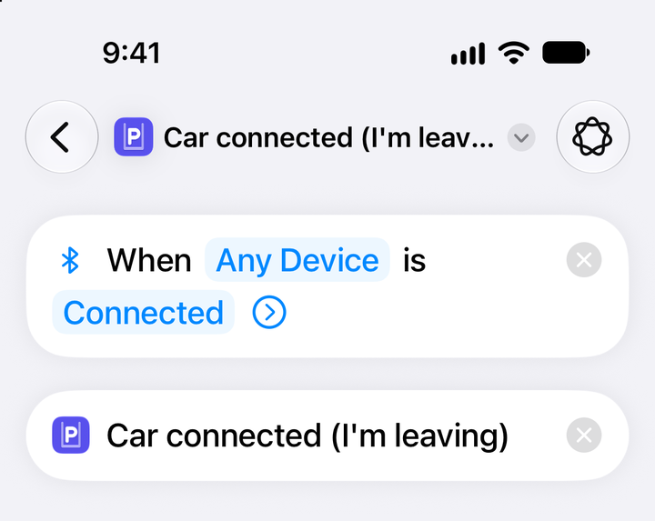
Tap back. You should now have two automations
Both switches should be green. Your car's name shows in place of "any Bluetooth device".
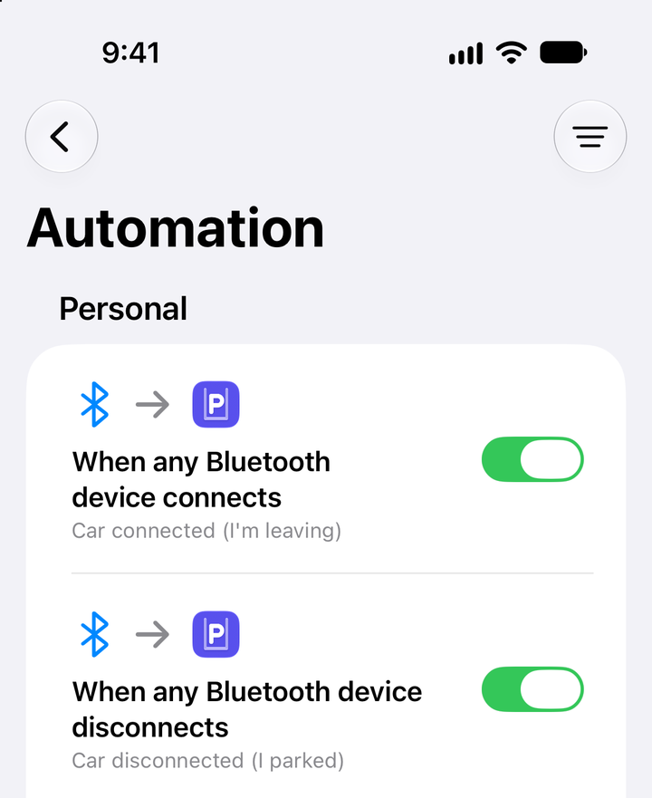
Check it works
Take a short drive and park at any public carpark. When you switch the car off, your Lock Screen should ask "Parked?" within a minute. When you get back in and the phone connects, the session ends with the fare.
In ParkSG, open Settings. Car automation shows when each automation last ran.
If it doesn't run
- Shortcuts asks before running. Open the automation, tap the arrow next to Connected or Disconnected, and turn off Confirm Before Run.
- Nothing happens. Check both switches in the Automation list are green, and that ParkSG has location set to Always in the iPhone Settings app.
- It starts when headphones disconnect. Open the automation, tap Any Device and pick only your car.
- Your car keeps Bluetooth on after the engine stops. Some cars hold the connection until you open the door or lock up. The timer starts then. You can adjust the start time on the parking card.
- Older iOS (17, 18, 26). Start from the Automation tab at the bottom of Shortcuts, tap +, choose Bluetooth, pick your car and "Is Disconnected", choose Run Immediately, then add the ParkSG action.
No car Bluetooth? You can still tap "I've parked here" on a carpark's page in ParkSG, or turn on "Detect without the automation" in ParkSG's Settings to try motion-based detection.